Three distinct fungal exteriors
v0.6.39 · 51 individually inspected final compiled views · zero species added.
This release does not finish the requested 99-species realism pass. All 23 Arthropoda, 30 Cnidaria and 46 Fungi received initial visual triage; 96 await deeper correction. The three selected fungal exteriors are still authored and partly stylized: no fitted specimen dimensions, calibrated tissue optics, universal phenotype, microscopic tissue, physiological process or independently validated biology. A photograph is one individual/stage/imaging condition, not proof of identity, native range or movement. One baseline action phase is not a complete cycle review. No percentage accuracy or specialist certification is claimed.
The previous mature-body resizing is withdrawn for these three records. Development and hyphal extension remain unavailable. A separate optional overlay shows enlarged teaching points at fertile regions, then stops after four authored seconds; it is not natural-scale sporulation or airflow.
Pleurotus ostreatus
Irregular overlapping oyster-shaped grey-brown caps, rolled pale margins, short eccentric stipes and attached descending lamellar plates replace the evenly spaced dish stack. Original fine numerical grain is separate from the unchanged Jean-Pol GRANDMONT photograph. Selected mature fruit bodies remain stationary; no hyphal extension or developmental sequence is implemented.
Real reference: Jean-Pol GRANDMONT · CC BY 3.0. Existing image bytes unchanged; no photographic pixels used on the model.

Actual institutional text inspected: overlapping shell-shaped pilei, incurved margin, grey-brown colour, decurrent pale gills and short or absent stem. Historical Massee1899 treatment is morphology context, not modern molecular identity confirmation or a fitted individual.
Manaaki Whenua Virtual Mycota · Pleurotus ostreatus
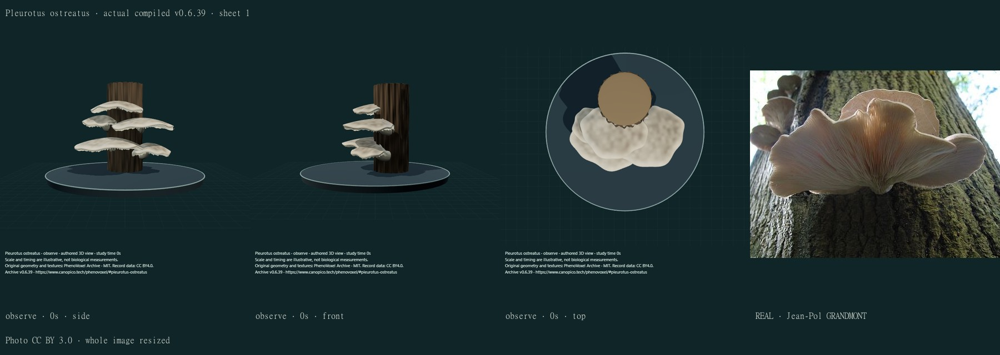
Model/layout MIT; photograph Jean-Pol GRANDMONT · CC BY 3.0. Whole source image resized, no generative alteration.
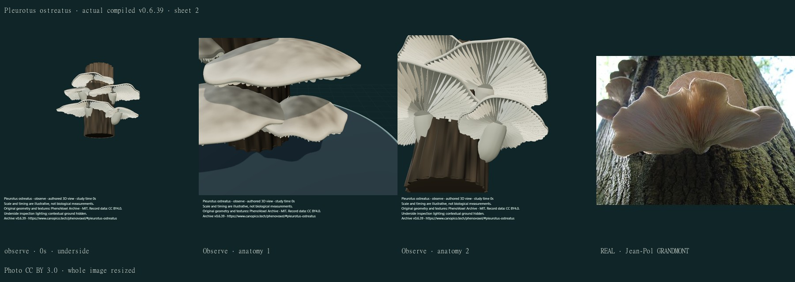
Model/layout MIT; photograph Jean-Pol GRANDMONT · CC BY 3.0. Whole source image resized, no generative alteration.
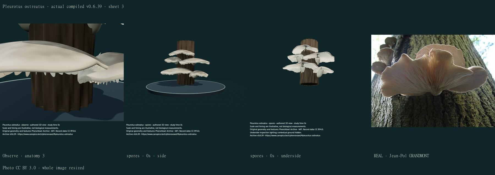
Model/layout MIT; photograph Jean-Pol GRANDMONT · CC BY 3.0. Whole source image resized, no generative alteration.
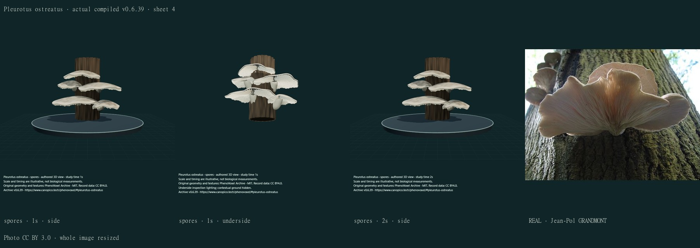
Model/layout MIT; photograph Jean-Pol GRANDMONT · CC BY 3.0. Whole source image resized, no generative alteration.
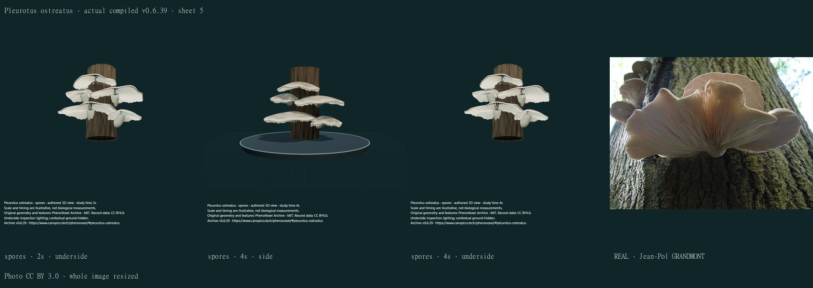
Model/layout MIT; photograph Jean-Pol GRANDMONT · CC BY 3.0. Whole source image resized, no generative alteration.
Model/layout MIT; photograph Jean-Pol GRANDMONT · CC BY 3.0. Whole source image resized, no generative alteration.
Shape findings: Five overlapping asymmetric caps and short eccentric attachments replace the even dish stack. Selected lamellar plates are exposed. Natural cap/stipe unions and gill decurrency remain approximate; context wood remains a simple undetermined cylinder.
Surface findings: The cap has original mottled pigment and fine numeric grain. It remains smoother and paler than parts of the retained field photograph; gill spacing, rounded plate ends, tissue grain, wetness and translucency are not specimen-fitted.
Movement/process findings: All fruit-body surfaces remain fixed. The optional enlarged spore-location points drift locally and hold after four display seconds; they are not measured release, air transport, growth or white-rot physiology.
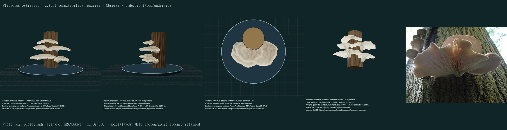
Four compatibility views were separately inspected. The same surfaces retain approximate pigment, with simplified lighting and reduced fine relief. They do not reproduce full WebGL optics.
Remaining: Unfitted dimensions, smooth selected tissue, incomplete natural variation/wear and uncalibrated optics. Fertile structures are external approximations; microscopic tissue, growth, physiology and actual release mechanics are absent. Button stages coexist as separate illustrations; no transition is claimed. Contextual wood is undetermined and is not another taxon.
Agaricus bisporus
Distinct selected cultivated button and open-cap exteriors replace three identical long-stemmed umbrellas. Low broad convex pilei, short stipes, selected intact juvenile veils, a thin mature annulus and free dark lamellar plates with short gills are retained as separate display stages. Original cream numerical grain is not a photographed tissue texture. Stage coexistence is not a simulated developmental sequence.
Real reference: Chris73 / Wikimedia Commons · CC BY-SA 3.0. Existing image bytes unchanged; no photographic pixels used on the model.

Actual descriptive text inspected: free crowded lamellae, shorter lamellulae, pink-to-dark mature gills, thin ring and varied cultivated cap colours. The author explicitly describes purchased Illinois grocery-store material, not wild collections or fitted developmental trajectories. No image pixels or dimensions imported.
Michael Kuo2018 · Agaricus bisporus · described grocery-store collections
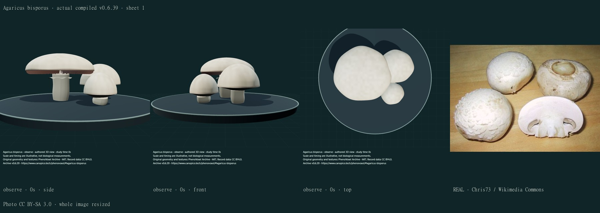
Model/layout MIT; photograph Chris73 / Wikimedia Commons · CC BY-SA 3.0. Whole source image resized, no generative alteration.
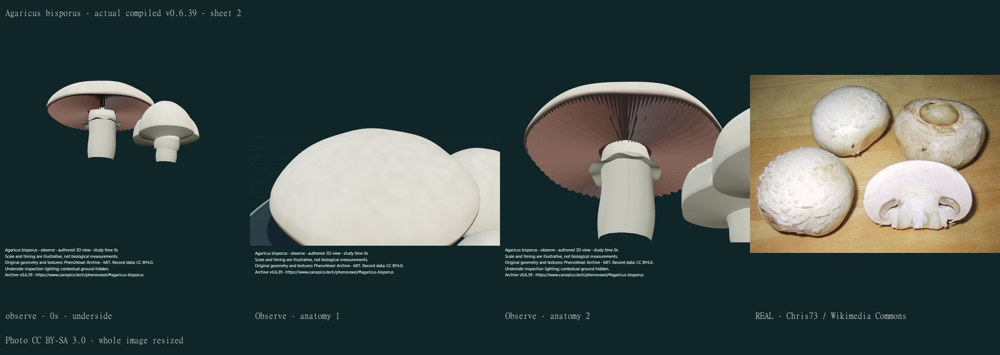
Model/layout MIT; photograph Chris73 / Wikimedia Commons · CC BY-SA 3.0. Whole source image resized, no generative alteration.
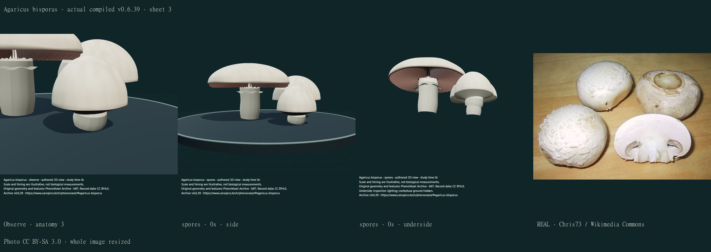
Model/layout MIT; photograph Chris73 / Wikimedia Commons · CC BY-SA 3.0. Whole source image resized, no generative alteration.
Model/layout MIT; photograph Chris73 / Wikimedia Commons · CC BY-SA 3.0. Whole source image resized, no generative alteration.
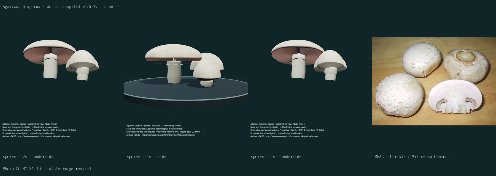
Model/layout MIT; photograph Chris73 / Wikimedia Commons · CC BY-SA 3.0. Whole source image resized, no generative alteration.
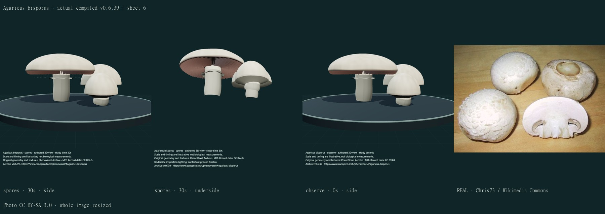
Model/layout MIT; photograph Chris73 / Wikimedia Commons · CC BY-SA 3.0. Whole source image resized, no generative alteration.
Shape findings: A short-stemmed expanded selected fruit body with free lamellae, short gills and thin ring is shown beside two closed-button illustrations. Veils now join selected cap margins. Their dimensions, veil curvature, stipe unions and annulus remain simplified; coexisting bodies are not an ontogenetic transition.
Surface findings: Selected pale cultivated pilei, stipe grain and dark mature gills are distinct. Surfaces lack the reference photograph’s fine scale cracking and natural bruising; the gills, stipe and veil are overly uniform. The source caption says white mushroom, I believe, from a supermarket: it is not independent identification.
Movement/process findings: No mature-body resizing or hyphal expansion remains exposed as development. Separate enlarged location points are a finite teaching overlay, not fitted sporulation, microscopic basidia or a developmental solver.
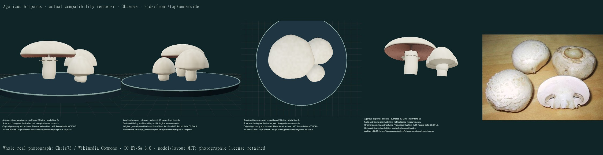
Four compatibility views were separately inspected. The same surfaces retain approximate pigment, with simplified lighting and reduced fine relief. They do not reproduce full WebGL optics.
Remaining: Unfitted dimensions, smooth selected tissue, incomplete natural variation/wear and uncalibrated optics. Fertile structures are external approximations; microscopic tissue, growth, physiology and actual release mechanics are absent. Button stages coexist as separate illustrations; no transition is claimed. Contextual wood is undetermined and is not another taxon.
Trametes versicolor
Asymmetric overlapping thin closed brackets, continuous pale margins, irregular contrasting colour zones, short attached velvety relief and a cream underside with fine pore-mouth cues replace open striped sheets. Original numeric bands vary in width and pigment; none are photograph pixels. The selected stationary colony remains unmeasured, with incomplete natural wear, hair optics and pore-tube anatomy.
Real reference: Jerzy Opioła · CC BY-SA 3.0. Existing image bytes unchanged; no photographic pixels used on the model.

Actual herbarium account text inspected: sessile dense imbricate/fused clusters, contrasting zones, hirsute/tomentose pileus and cream pore surface with angular-to-circular pores. No specimen measurements, image pixels or pore-density fitting imported.
North Carolina State University · Larry F Grand Mycological Herbarium · Trametes versicolor
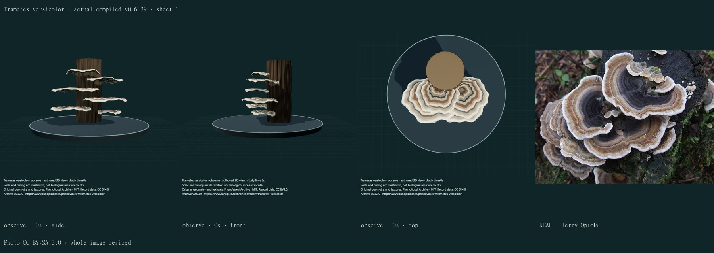
Model/layout MIT; photograph Jerzy Opioła · CC BY-SA 3.0. Whole source image resized, no generative alteration.
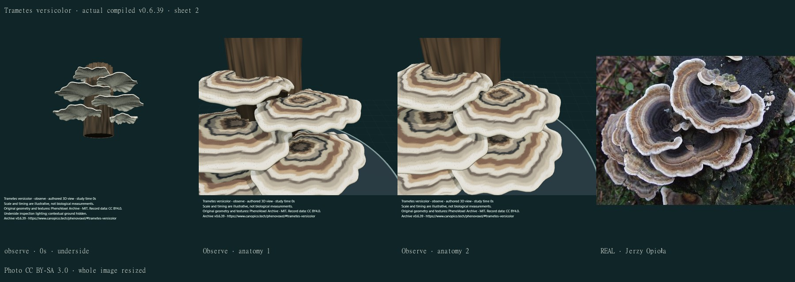
Model/layout MIT; photograph Jerzy Opioła · CC BY-SA 3.0. Whole source image resized, no generative alteration.
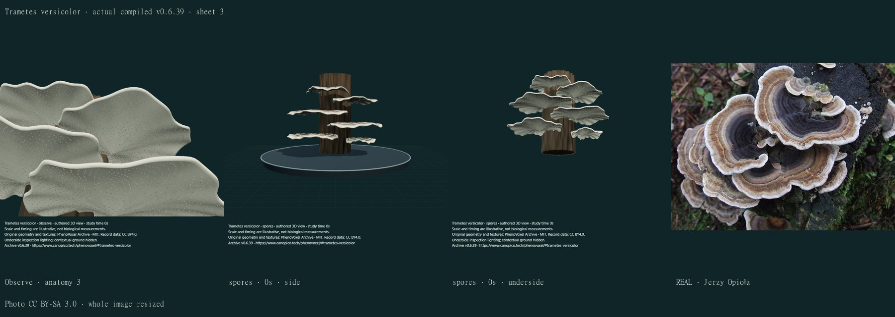
Model/layout MIT; photograph Jerzy Opioła · CC BY-SA 3.0. Whole source image resized, no generative alteration.
Model/layout MIT; photograph Jerzy Opioła · CC BY-SA 3.0. Whole source image resized, no generative alteration.
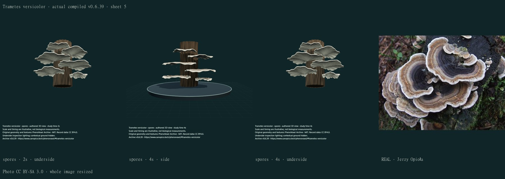
Model/layout MIT; photograph Jerzy Opioła · CC BY-SA 3.0. Whole source image resized, no generative alteration.
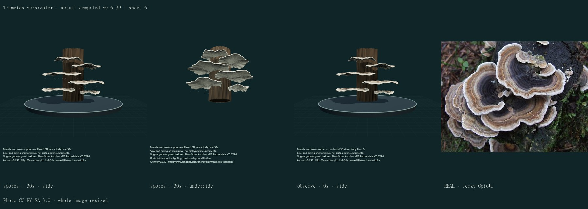
Model/layout MIT; photograph Jerzy Opioła · CC BY-SA 3.0. Whole source image resized, no generative alteration.
Shape findings: Six thin closed asymmetric brackets, pale margins and external pore-mouth relief replace open sheets. Natural fused clusters, apposition, pore tubes, irregular attachment and wear remain incomplete; selected cap contours still repeat.
Surface findings: Irregular-width original zones, fine pore-mouth and short attached velvet geometry are visible. The bands are still too regular across individuals; the upper surface is smoother/paler than portions of the field photograph, and optics and natural wear are uncalibrated.
Movement/process findings: Sessile brackets remain stationary. Four-second enlarged location cues do not implement basidiospore discharge, airflow, fungal development or wood-decay physiology.
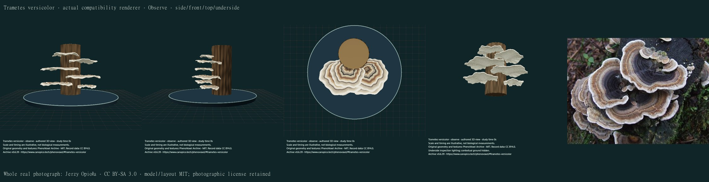
Four compatibility views were separately inspected. The same surfaces retain approximate pigment, with simplified lighting and reduced fine relief. They do not reproduce full WebGL optics.
Remaining: Unfitted dimensions, smooth selected tissue, incomplete natural variation/wear and uncalibrated optics. Fertile structures are external approximations; microscopic tissue, growth, physiology and actual release mechanics are absent. Button stages coexist as separate illustrations; no transition is claimed. Contextual wood is undetermined and is not another taxon.
Review and checks
Initial cap-orientation check found reversed fan normals, repaired by orienting the closed volume without dropping manifold or nondegenerate-face checks. First full regression was interrupted during resource pressure after a new overlay timescale failed the existing uncalibrated-time contract; its disclosure was corrected. The initial underside draft was too dark; disclosed camera-aligned inspection fill is used for these three bodies only. All such drafts are excluded from final counts. A later full pass completed with 264 of 268 passing: three historical-baseline restoration checks and one stale current inventory reference failed. The new reversible fungal revisions are now restored before the unchanged historical hashes; the inventory reads the current release. The final bounded-memory sequential local regression passed all 268 checks. Final build and frozen publication verification are separate gates. Inward gill faces, long oyster attachments, a detached-looking juvenile veil, tight anatomy framing and dark undersides were also corrected and recaptured.
Full paper/figure retrieval for two developmental research leads was blocked or rate-limited. No paper figures or fitted development were used. Actual institutional morphology descriptions and the retained licensed photographs support only the selected qualitative exteriors.
Detailed evidence and limitations · Published software checks